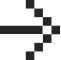
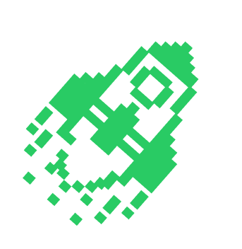

— сервис онлайн-образования. Мы помогаем изменить свою профессиональную жизнь в программировании
В роли наставника и ревьюера вы будете:
Менять жизнь к лучшему
Тысячи наших студентов нуждаются в ваших знаниях и опыте — не бойтесь ими делиться.
Развивать личный бренд
Публикуйте статьи и выступайте на мероприятиях, чтобы как можно больше людей узнали о вас как об эксперте.
Развиваться внутри роли
Вы сможете стать старшим наставником или сеньор-ревьювером.
Учиться новому
Вы узнаете, как давать обратную связь, выступать на публике и мотивировать людей
Общаться с людьми из EdTech
Станете частью сообщества экспертов и посмотрите на мир онлайн-образования изнутри.
Получать дополнительный доход
Иметь доход в среднем от 35 до 50 тысяч ₽ в месяц — удаленно, 2–3 часа в день, график выбираете сами.
Как стать экспертом
- 1
Выберите роль и заполните заявку
- 2
Пройдите отбор и бесплатное обучение
- 3
Начните делиться знаниями со студентами Яндекс Практикума
Чем занимается наставник?
Аня Сорокина
Я ведущий дизайнер в Сбере и наставница на направлении «Дизайн»
Два раза в месяц веду вебинары, встречаюсь с коллегами, отвечаю студентам на вопросы и даю фидбек по их проектам
В общем, делюсь опытом и мотивирую студентов, помогаю им ставить цели, рефлексировать и делать выводы
Я люблю свою работу и круто, что мне есть с кем этим поделиться ❤️
Условия сотрудничества
- 
35–55 тысяч ₽ в месяц
Группа ≈50 человек
Занятость 2-3 часа в день
Найди для себя идеальную роль в Практикуме
Открытые позиции
Оплата ежемесячная за ведение группы
на 8 месяцев
в среднем 45 000 руб/мес
Я хочу стать наставником. Меня возьмут?
• Скорее всего — да, если вы:
• Бэкенд-разработчик на Python с опытом от 3-х лет
• Владеете Django и другими фреймворками, знаете ООП,
базовые алгоритмы и структуры данных.
• Работали с GIT, СУБД SQL, Docker
• Готовы посвящать проекту от 10 часов в неделю
на 6 месяцев
в среднем 30 000 руб/мес
Я хочу стать наставником. Меня возьмут?
Скорее всего — да, если вы:
•Аналитик на Python с опытом работы от 2 лет
• Умеете работать с SQL и библиотеками Pandas, NumPy, Matplotlib, Seaborn и желательно Plotly
•Умеете проводить a/b-тесты
•Готовы посвящать проекту 10 часов в неделю
Здесь пока ничего нет, но скоро может появиться
Расскажите нам о себе и подпишитесь на наш telegram-канал @practicum_experts, чтобы узнавать об открытых позициях
Истории ребят из команды
Кем ты можешь стать
в Практикуме?
Поможем понять за 5 минут
В какой сфере
ты профи?
Карточка откроется после ответа
на предыдущий вопрос
Карточка откроется после ответа
на предыдущий вопрос
Ты можешь стать отличным
наставником в программировании
Смотри, какие у нас есть вакансии:
Не нашлось подходящей позиции?
Мы верим, что люди — главная ценность, поэтому всегда открыты к предложениям
Хочу стать частью Практикума